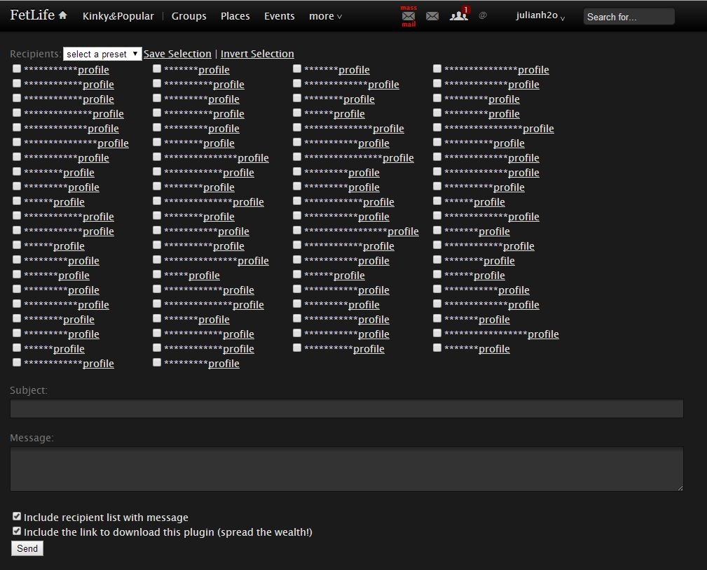

Note: You can probably get this working on Firefox as well using the Firefox equivalent of this plugin (Greasemonkey). I have not personally tried it though and it may not work perfectly!
Chrome Users
First, get Tampermonkey from the Chrome web store
Next, download and install Fetlife: Natural Mail Enhancement by clicking the link. (You'll see a page pop up confirming that you want to download and install the script, click yes)
Now, when you visit any page on Fetlife, you'll see a mass mail icon in your header bar
When you click on the mass mail button, you'll be greeted with this interface. Select the checkboxes next to the usernames you'd like to message and then fill out the subject and message before hitting send to mail the list.
Once you have some users selected, click the "save selection" link and enter a name to save that group of people for later use. The dropdown contains a list of your saved selections.
The profile link opens in a new window and is useful if your friends are like mine and they change their profile names often! :)
